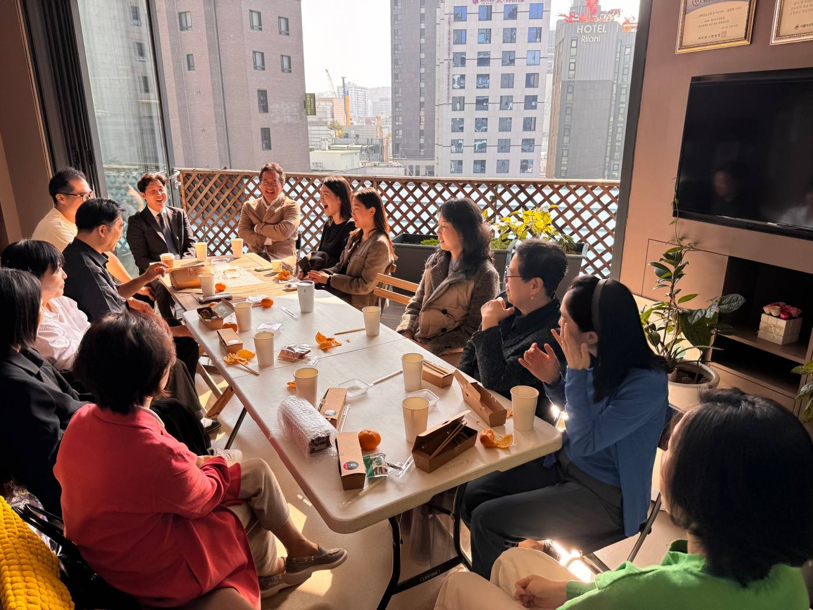

날마다교회는
날마다교회는 예배와 선교, 구제와 장학 사역에 힘쓰며, 하나님을 사랑하고 이웃을 섬기는 교회입니다.
| 정식 명칭 | 대한예수교장로회날마다교회 (Nalmada Church / Daily Church) |
|---|---|
| 소속 | 대한예수교장로회 총회(합동) 평서노회 |
| 설립일 | 2021년 7월 4일 |
| 고유번호(국세청) | 603-82-79530 (비영리 종교단체) |
| 담임목사 | 우희영 |
| 주소 | 서울시 노원구 동일로216길 92, 6동 707호 |
| 예배 장소 | 서울시 종로구 종로 120, 동영타워 5층 |

우리가 믿는 것
날마다교회는 성경을 하나님의 말씀으로 믿으며, 사도신경으로 신앙을 고백합니다. 주일예배 때마다 함께 고백하는 사도신경은 다음과 같습니다.
전능하사 천지를 만드신 하나님 아버지를 내가 믿사오며, 그 외아들 우리 주 예수 그리스도를 믿사오니, 이는 성령으로 잉태하사 동정녀 마리아에게 나시고, 본디오 빌라도에게 고난을 받으사 십자가에 못 박혀 죽으시고, 장사한지 사흘 만에 죽은 자 가운데서 다시 살아나시며, 하늘에 오르사 전능하신 하나님 우편에 앉아 계시다가, 저리로서 산 자와 죽은 자를 심판하러 오시리라. 성령을 믿사오며, 거룩한 공회와 성도가 서로 교통하는 것과, 죄를 사하여 주시는 것과, 몸이 다시 사는 것과, 영원히 사는 것을 믿사옵나이다. 아멘.
담임목사 소개
우희영 목사
- 총신대학교 신학과 (B.A.)
- 총신대학교 신학대학원 목회학 석사 (M.Div.)
- 아세아연합신학대학원 신학 석사 (Th.M.)
- 2019 인도네시아 Youth KOSTA 강사
- 전) 대전 새로남교회 교육전도사
- 전) 장충교회 부목사
- 전) 빛트인교회 부목사
- 전) "리스너즈"팀 메신저
- 현) 날마다교회 담임목사
연혁
| 2021. 07. 04 | 우희영 목사 가정에서 날마다교회 설립 |
|---|---|
| 2021. 10. 10 | 신사동 카페로 예배 처소 이전 (서울시 강남구 도산대로 207, 지하 1층) |
| 2021. 10. 12 | 평서노회 가입 (제174회 정기노회) |
| 2021. 10. 24 | 교회 정관 제정 |
| 2021. 11. 02 | 협력 선교사 후원 시작 (M국) |
| 2021. 11. 08 | 협력 선교사 증원 (I국) |
| 2021. 11. 25 | 첫 장학금 집행 (아세아연합신학대학교 외국인 학생 3명) |
| 2022. 01. 01 | 성경 통독 사역 시작 |
| 2022. 02. 16 | 협력 선교사 증원 (V국) |
| 2022. 03. 04 | 우크라이나 선교사와 교류 |
| 2022. 05. 15 | 청담동으로 예배 처소 이전 (서울시 강남구 청담동) |
| 2022. 09. 18 | 케냐 선교사와 교류 |
| 2022. 12. 11 | 협력 선교사 증원 (J국) |
| 2023. 01. 08 | 교회학교 신설 |
| 2023. 06. 04 | 삼성동 카페로 예배 처소 이전 (서울시 강남구 테헤란로81길 13, 1층) |
| 2023. 10. 15 | 교회 정관 개정 |
| 2023. 12. 20 | 국세청 고유번호 등록 (603-82-79530, 비영리 종교단체) |
| 2024. 10. 06 | 창원초대교회와 교환 예배 |
| 2024. 12. 22 | 종로로 예배 처소 이전 (서울시 종로구 종로 120, 동영타워 5층) |